직업상담사-2급 (2019-08-04 기출문제)
1과목: 직업상담학
1. 다음에서 설명하고 있는 생애진로사정의 구조는?
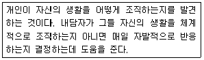
- 진로사정
- 전형적인 하루
- 감정과 장애
- 요약
(정답률: 88%)

2. 상담 장면에서 인지적 명확성이 부족한 내담자를 위한 개입방법이 아닌 것은?
- 잘못된 정보를 바로 잡아줌
- 구체적인 정보를 제공함
- 원인과 결과의 착오를 바로 잡아줌
- 가정된 불가피성에 대해 지지적 상상을 제공함
(정답률: 80%)
3. 상담자가 길을 전혀 잃어버리지 않고 마치 자신이 내담자의 세계에서 경험을 하는 듯한 능력을 의미하는 상담기법은?
- 직면
- 즉시성
- 리허설
- 감정이입
(정답률: 84%)
4. 직업상담사의 역할과 가장 거리가 먼 것은?
- 직업정보의 수집 및 분석
- 직업관련 이론의 개발과 강의
- 직업관련 심리검사의 실시 및 해석
- 구인, 구직, 직업적응, 경력개발 등 직업관련 상담
(정답률: 88%)
5. 인간중심 상담이론에서 상담사의 역할과 가장 거리가 먼 것은?
- 조력관계를 통해 성장을 촉진한다.
- 내담자 문제를 진단하여 분류한다.
- 내담자가 자신의 깊은 감정을 깨닫게 돕는다.
- 내담자로 하여금 존중받고 있음을 느끼게 한다.
(정답률: 75%)
6. 포괄적 직업상담 과정에 대한 설명으로 틀린 것은?
- 내담자가 직업선택에서 가졌던 문제들을 상담한다.
- 내담자가 자신의 내부와 주변에서 일어나는 일들을 충분히 자각하게 한다.
- 직업심리검사를 통해 내담자의 문제를 명료화한다.
- 상담과 검사를 통해 얻어진 자료를 바탕으로 직업정보를 제공한다.
(정답률: 48%)
7. 진로시간전망 검사자의 사용목적과 가장 거리가 먼 것은?
- 진로 태도를 인식하기 위해
- 미래의 방향을 끌어내기 위해
- 계획에 대해 긍정적 태도를 강화하기 위해
- 현재의 행동을 미래의 결과와 연계시키기 위해
(정답률: 55%)
8. Dagley가 제시한 직업가계도를 그릴 때 관심을 가져야 할 요인과 가장 거리가 먼 것은?
- 가족구성원들의 진로선택 형태와 방법
- 내담자가 성장할 때의 또래집단 상황
- 가족의 경제적 기대와 압력
- 특정 직업에 대한 가계 유전적 장애
(정답률: 51%)
9. 다음 중 내담자의 동기와 역할을 사정함에 있어서 자기보고법이 적합한 내담자는?
- 인지적 명확성이 낮은 내담자
- 인지적 명확성이 높은 내담자
- 흥미가치가 낮은 내담자
- 흥미가치가 높은 내담자
(정답률: 79%)
10. Mitchell과 Krumboltz가 제시한 진로발달과정의 요인에 해당하지 않는 것은?
- 특별한 능력
- 환경조건
- 사회성 기술
- 과제접근 기술
(정답률: 54%)
11. Crites가 제시한 직업상담 과정에 포함되지 않는 것은?
- 진단
- 문제 분류
- 정보 제공
- 문제 구체화
(정답률: 59%)
12. Bordin의 정신역동적 진로상담기법과 가장 거리가 먼 것은?
- 비교
- 순수성
- 명료화
- 소망-방어체계에 대한 해석
(정답률: 79%)
13. 상담에서 비밀보장 예외의 원칙과 가장 거리가 먼 것은?
- 상담자가 슈퍼비전을 받아야 하는 경우
- 심각한 범죄 실행의 가능성이 있는 경우
- 내담자가 자살을 실행할 가능성이 있는 경우
- 상담을 의뢰한 교사가 내담자의 상담 자료를 요청하는 경우
(정답률: 77%)
14. Williamson의 특성- 요인 직업상담에서 검사의 해석단계에 이용할 수 있다고 제시한 상담기법은?
- 가정
- 반영
- 변명
- 설명
(정답률: 66%)
15. 행동주의 상담기법 중 내담자가 긍정적 강화를 받을 기회를 박탈시키는 것은?
- 타임아웃
- 혐오치료
- 자극통제
- 토큰경제
(정답률: 71%)
16. 직업카드 분류에 관한 설명으로 틀린 것은?
- 내담자를 능동적으로 참여하도록 한다.
- 즉각적인 피드백을 제공한다.
- 내담자가 제한적으로 반응하도록 구성되어 있다.
- 상담자가 내담자에 대한 의미 있는 여러 정보를 얻을 수 있다.
(정답률: 75%)
17. 다음 대화는 교류분석 이론의 어떤 유형에 해당하는가?
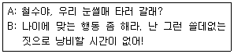
- 양시적 교류
- 직접적 교류
- 이차적 교류
- 교차적 교류
(정답률: 70%)
18. Williamson의 변별진단에서 4가지 결과에 해당하지 않는 것은?
- 직업선택에 대한 확신 부족
- 직업 무선택
- 정보의 부족
- 흥미와 적성의 모순
(정답률: 72%)
19. 초기면담의 유형 중 정보지향적 면담을 위한 상담기법과 가장 거리가 먼 것은?
- 재진술
- 탐색해 보기
- 폐쇄형 질문
- 개방형 질문
(정답률: 60%)
20. Jung이 언급한 원형들 중 환경의 요구에 조화를 이루려고 하는 적응의 원형은?
- 페르소나
- 아니마
- 그림자
- 아니무스
(정답률: 79%)
2과목: 직업심리학
21. Ginzberg의 진로발달 3단계가 아닌 것은?
- 잠정기(tentative phase)
- 환상기(fantasy phase)
- 현실기(realistic phase)
- 탐색기(exploring phase)
(정답률: 72%)
22. 심리검사의 유형과 그 예를 짝지은 것으로 틀린 것은?
- 직업흥미검사 - VPI
- 직업적성검사 - AGCT
- 성격검사 - CPI
- 직업가치검사 - MIQ
(정답률: 54%)
23. 반분 신뢰도(split-half reliability)를 추정하는 방법과 가장 거리가 먼 것은?
- 사후양분법
- 전후절반법
- 기우절반법
- 짝진 임의배치법
(정답률: 55%)
24. 직무스트레스 매개변인으로 개인 속성에 해당하는 것은?
- 통제 소재
- 역할 과부하
- 역할 모호성
- 조직 풍토
(정답률: 49%)
25. 직무분석 자료의 특성과 가장 거리가 먼 것은?
- 직무분석 자료는 사실 그대로를 반영하여야 한다.
- 직무분석 자료는 가공하지 않은 원상태의 자료이어야 한다.
- 직무분석 자료는 과거와 현재의 정보를 모두 활용해야 한다.
- 직무분석 자료는 논리적으로 체계화해야 한다.
(정답률: 68%)
26. 다음은 Holland의 6가지 성격유형 중 무엇에 해당하는가?
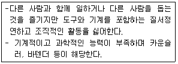
- 현실적 유형(R)
- 탐구적 유형(I)
- 사회적 유형(S)
- 관습적 유형(C)
(정답률: 74%)
27. 직무만족에 관한 2요인 이론의 설명으로 틀린 것은?
- 낮은 수준의 욕구를 만족하지 못하면 직무 불만족이 생기나 그 역은 성립되지 않는다.
- 자아실현에 의해서만 욕구만족이 생기나 자아실현의 실패로 직무 불만족이 생기는 것은 아니다.
- 동기요인은 높은 수준의 성과를 얻도록 자극하는 요인이다.
- 위생요인은 직무 불만족을 가져오는 것이며 만족감을 산출한 힘도 갖고 있는 것이다.
(정답률: 57%)
28. Bandura가 제시한 사회인지이론의 인과적 모형에 해당하지 않는 변인은?
- 외형적 행동
- 개인적 기대와 목표
- 외부환경 요인
- 개인과 신체적 속성
(정답률: 39%)
29. Selye가 제시한 일반적응증후군의 3가지 단계가 아닌 것은?
- 경계 단계
- 도피 단계
- 저항 단계
- 탈진 단계
(정답률: 75%)
30. 이미 신뢰성이 입증된 유사한 검사점수와의 상관계수로 검증하는 신뢰도는?
- 검사-재검사 신뢰도
- 동형검사 신뢰도
- 반분 신뢰도
- 채점자 간 신뢰도
(정답률: 64%)
31. 직업적응이론에서 개인의 가치와 직업 환경의 강화인 간의 조화를 측정하는데 사용되는 검사는?
- 미네소타 중요도 검사(MIQ)
- 미네소타 만족 질문지(MSQ)
- 미네소타 충족 척도(MSS)
- 미네소타 직업평가 척도(MORS)
(정답률: 49%)
32. 다음은 어떤 경력개발프로그램 개발 과정에 해당하는가?
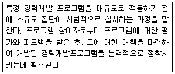
- 요구 조사(need assessment)
- 자문(consulting)
- 팀-빌딩(team-building)
- 파일럿 연구(pilot study)
(정답률: 78%)
33. 스트레스에 대처하기 위한 포괄적인 노력과 가장 거리가 먼 것은?
- 과정중심적 사고방식에서 목표 지향적 초고속 사고로 전환해야 한다.
- 가치관을 전환해야 한다.
- 스트레스에 정면으로 도전하는 마음가짐이 있어야 한다.
- 균형 있는 생활을 해야 한다.
(정답률: 77%)
34. 진로선택에 관한 사회학습이론에서 개인의 진로발달 과정과 관련이 없는 요인은?
- 유전 요인과 특별한 능력
- 환경 조건과 사건
- 학습경험
- 인간관계기술
(정답률: 62%)
35. 진로성숙도검사(CMI) 중 태도척도의 하위영역과 문항의 예가 틀리게 연결된 것은?
- 결정성(decisiveness)-나는 선호하는 진로를 자주 바꾸고 있다.
- 관여도(involvement)-나는 졸업할 때까지는 진로선택 문제에 별로 신경을 쓰지 않을 거이다.
- 타협성(compromise)-나는 부모님이 정해주시는 직업을 선택하겠다.
- 지향성(orientation)-일하는 것이 무엇인지에 대해 생각한 바가 거의 없다.
(정답률: 64%)
36. 특성요인 이론의 기본적인 가정이 아닌 것은?
- 인간은 신뢰롭고 타당하게 측정할 수 없는 독특한 특성을 지니고 있다.
- 직업에서의 성공을 위해 매우 구체적인 특성을 각 개인이 지닐 것을 요구한다.
- 진로선택은 다소 직접적인 인지과정이기 때문에 개인의 특성과 직업의 특성을 짝짓는 것이 가능하다.
- 개인의 특성과 직업의 요구사항이 서로 밀접하게 관련을 맺을수록 직업적 성공의 가능성은 커진다.
(정답률: 59%)
37. Wechsler 지능검사에서 결정적 지능과 관련이 있는 소검사는?
- 이해, 공통성
- 어휘, 토막짜기
- 기본지식, 모양맞추기
- 바꿔쓰기, 숫자외우기
(정답률: 52%)
38. 내담자의 적성과 흥미 또는 성격이 직업적 요구와 달라 생긴 직업적응문제를 해결하는데 가장 적합한 방법은?
- 스트레스 관리 방안 모색
- 직업 전환
- 인간관계 개선 프로그램 제공
- 갈등관리 프로그램 제공
(정답률: 77%)
39. 심리검사에서 규준에 대한 설명으로 옳은 것은?
- 한 집단의 특성을 가장 간편하게 표현하기 위한 개념으로 그 집단의 대푯값을 말한다.
- 한 집단의 수치가 얼마나 동질적인지를 표현하기 위한 개념으로 점수들이 그 집단의 평균치로부터 벗어난 평균거리를 말한다.
- 서로 다른 체계로 측정한 점수들을 동일한 조건에서 비교하기 위한 개념으로 원점수에서 평균을 뺀 후 표준편차로 나눈 값을 말한다.
- 원점수를 표준화된 집단의 검사점수와 비교하기 위한 개념으로 대표집단의 검사점수 분포도를 작성하여 개인의 점수를 해석하기 위한 것이다.
(정답률: 56%)
40. 다음 중 직무분석 결과의 활용 용도와 가장 거리가 먼 것은?
- 신규 작업자의 모집
- 종업원의 교육훈련
- 인력수급계획 수립
- 종업원의 사기조사
(정답률: 68%)
3과목: 직업정보론
41. 다음에 해당하는 NCS 수준 체계는?
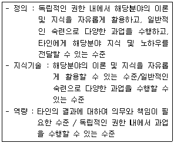
- 8수준
- 7수준
- 6수준
- 5수준
(정답률: 53%)
42. 직업정보 수집을 위한 설문지 작성에 관한 설명으로 틀린 것은?
- 폐쇄형 질문의 응답범주는 포괄적(exhaustive)이어야 한다.
- 응답자의 이해능력을 고려하여 설문문항이 작성되어야 한다.
- 폐쇄형 질문의 응답범주는 상호배타적 (mutually exclusive)이지 않아야 된다.
- 이중질문(double-barreled question)은 배제되어야 한다.
(정답률: 61%)
43. 한국표준직업분류에서 다음에 해당하는 직업분류 원칙은?
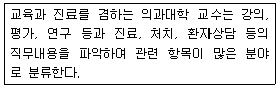
- 취업 시간 우선 원칙
- 최상급 직능수준 우선 원칙
- 조사 시 최근의 직업 원칙
- 주된 직무 우선 원칙
(정답률: 72%)
44. 직업, 훈련, 자격 정보를 제공하는 사이트 또는 정보서와 제공내용이 틀리게 연결된 것은?
- 한국직업사전 - 직업별 제시임금과 희망임금 정보
- 워크넷 - 직업심리검사 실시
- 한국직업전망 - 직업별 적성 및 흥미 정보
- 자격정보시스템(Q-NET) - 국가기술자격별 합격률 정보
(정답률: 68%)
45. ‘4차 산업혁명에 따른 새로운 직업’에 대한 국내 일간지의 사설을 내용분석하기 위해 가능한 표본추출방법을 모두 고른 것은?
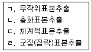
- ㄱ, ㄴ
- ㄱ, ㄷ
- ㄴ, ㄷ, ㄹ
- ㄱ, ㄴ, ㄷ, ㄹ
(정답률: 71%)
46. 한국직업사전의 부가 직업정보 중 숙련기간에 대한 설명으로 틀린 것은?
- 정규교육과정을 이수한 후 해당 직업의 직무를 평균적인 수준으로 스스로 수행하기 위하여 필요한 각종 교육기간, 훈련기간 등을 의미한다.
- 해당 직업에 필요한 자격ㆍ면허를 취득하는 취업 전 교육 및 훈련기간뿐만 아니라 취업 후에 이루어지는 관련 자격ㆍ면허 취득 교육 및 훈련 기간도 포함된다.
- 자격ㆍ면허가 요구되는 직업은 아니지만 해당 직무를 평균적으로 수행하기 위한 각종 교육ㆍ훈련, 수습교육, 기타 사내교육, 현장훈련 등의 기간이 포함된다.
- 5수준의 숙련기간은 4년 초과 ~ 10년 이하이다.
(정답률: 61%)
47. 다음은 국가기술자격 검정의 기준 중 어떤 등급에 관한 것인가?
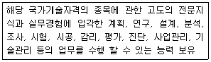
- 기술사
- 기사
- 산업기사
- 기능장
(정답률: 61%)
48. 직업정보의 관리과정에 대한 설명으로 틀린 것은?
- 직업정보 수집시에는 명확한 목표를 세운다.
- 직업정보 분석시에는 하나의 항목에 초점을 맞춰 집중적으로 분석해야 한다.
- 직업정보 가공시에는 전문적인 지식이 없어도 이해할 수 있도록 가공해야 한다.
- 직업정보 가공시에는 직업이 가지고 있는 장ㆍ단점을 편견 없이 제공해야 한다.
(정답률: 76%)
49. 국가기술자격법에 의한 국가기술자격 종목이 아닌 것은?
- 제강기능사
- 주택관리사보
- 사회조사분석사 1급
- 스포츠경영관리사
(정답률: 56%)
50. 한국표준직업분류의 주요 개정(제7차) 방향 및 특징에 대한 설명으로 틀린 것은?
- 지난 개정 이후 시간 경과를 고려하여 전면 개정 방식으로 추진하되, 중분류 이하 단위 분류 체계를 중심으로 개정을 추진하였다.
- 대형재난 대응 및 예방의 사회적 중요성을 고려하여 방재 기술자 및 연구원을 신설하였다.
- 포괄적 직무로 분류되어 온 사무직의 대학행정 조교, 증권 사무원, 기타 금융 사무원, 행정사, 중개 사무원을 신설하였다.
- 제조 관련 기능 종사원, 과실 및 채소 가공 관련 기계 조작원, 섬유 제조 기계 조작원 등은 복합ㆍ다기능 기계의 발전에 따라 통합되었던 직종을 세분하였다.
(정답률: 55%)
51. 2019 한국직업전망에서 세분류 수준의 일자리 전망 결과가 ‘증가’ 및 ‘다소 증가’에 해당하는 직업명을 모두 고른 것은?
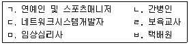
- ㄱ, ㄴ, ㄷ, ㅁ, ㅂ
- ㄴ, ㄹ, ㅂ
- ㄱ, ㄷ, ㄹ, ㅁ
- ㄱ, ㄴ, ㄷ, ㄹ, ㅁ, ㅂ
(정답률: 69%)
52. 한국고용정보원에서 제공하는 ‘워크넷 구인ㆍ구직 및 취업동향’에 관한 설명으로 틀린 것은?
- 수록된 통계는 전국 고용센터, 한국산업인력공단, 시ㆍ군ㆍ구 등에서 입력한 자료를 워크넷 DB로 집계한 것이다.
- 통계표에 수록된 단위가 반올림되어 표기되어 전체 수치와 표내의 합계가 일치하지 않을 수 있다.
- 워크넷을 이용한 구인ㆍ구직자들만을 대상으로 하므로, 통계자료가 노동시장 전체의 수급상황과 정확히 일치한다.
- 공공고용안정기관의 취업지원서비스를 통해 산출되는 구직자, 구인업체 등에 관한 통계를 제공하여, 취업지원사업 성과분석 등의 국가 고용정책사업 수행을 위한 기초자료를 제공하는데 목적이 있다.
(정답률: 78%)
53. 직업정보의 수집 이후 일반적인 처리과정을 바르게 나열한 것은?
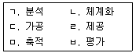
- ㄱ→ㄴ→ㄷ→ㄹ→ㅁ→ㅂ
- ㄱ→ㄷ→ㄴ→ㄹ→ㅁ→ㅂ
- ㄴ→ㄷ→ㅁ→ㄱ→ㄹ→ㅂ
- ㄴ→ㄹ→ㄷ→ㄱ→ㅁ→ㅂ
(정답률: 68%)
54. 워크넷에서 채용정보 상세검색 시 선택할 수 있는 기업형태가 아닌 것은?
- 대기업
- 일학습병행기업
- 가족친화인증기업
- 다문화가정지원기업
(정답률: 60%)
55. 최저임금에 관한 설명으로 틀린 것은?
- 2019년 최저임금은 전년대비 10.9% 인상한 시급 8350원이다.
- 최저임금은 최저임금위원회의 심의ㆍ의결을 거쳐 기획재정부장관이 결정한다.
- 임금의 최저수준을 정하고, 사용자에게 이 수준 이상의 임금을 지급하도록 법으로 강제함으로 써 임금 금로자를 보호한다.
- 최저임금 적용을 받는 사용자는 최저임금액을 근로자가 쉽게 볼 수 있는 장소에 게시하거나 그 외 적당한 방법으로 근로자에게 널리 알려야 한다.
(정답률: 71%)
56. 한국표준산업분류의 산업분류 적용원칙에 관한 설명으로 틀린 것은?
- 생산단위는 투입물과 생산공정을 제외한 산출물을 고려하여 그들의 활동을 가장 정확하게 설명된 항목에 분류해야 한다.
- 복합적으로 활동단위는 우선적으로 최상급 분류단계를 정확히 결정하고, 순차적으로 중, 소, 세, 세세분류 단계 항목을 결정하여야 한다.
- 산업활동이 결합되어 있는 경우에는 그 활동단위의 주된 활동에 따라서 분류하여야 한다.
- 공식적 생산물과 비공식적 생산물, 합법적 생산물과 불법적인 생산물을 달리 분류하지 않는다.
(정답률: 52%)
57. 다음에서 설명하고 있는 것은?
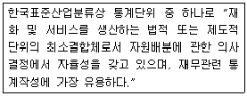
- 산업
- 기업체
- 산업활동
- 사업체
(정답률: 53%)
58. 고용노동부에서 실시하는 직업상담(취업지원) 프로그램 중 취업을 원하는 결혼이민여성(한국어소통 가능자)을 대상으로 하는 것은?
- Wici 취업지원 프로그램
- CAP+ 프로그램
- allA 프로그램
- Hi 프로그램
(정답률: 69%)
59. 공공 직업정보의 일반적인 특성이 아닌 것은?
- 전체 산업이나 직종을 대상으로 한다.
- 조사 분석 및 정리, 제공에 상당한 시간 및 비용이 소요되므로 유료제공이 원칙이다.
- 지속적으로 조사 분석하여 제공되며 장기적인 계획 및 목표에 따라 정보체계의 개선작업 수행이 가능하다.
- 직업별로 특정한 정보만을 강조하지 않고 보편적인 항목으로 이루어진 기초적인 직업정보체계로 구성된다.
(정답률: 78%)
60. 한국표준산업분류의 분류구조 및 부호체계에 대한 설명으로 틀린 것은?
- 부호 처리를 할 경우에는 아라비아 숫자만을 사용하도록 했다.
- 권고된 국제분류 ISIC Rev.4를 기본체계로 하였으나 국내 실정을 고려하여 국제분류의 각단계 항목을 분할, 통합 또는 재그룹화하여 독자적으로 분류 항목과 분류 부호를 설정하였다.
- 분류 항목 간에 산업 내용의 이동을 가능한 억제하였으나 일부 이동 내용에 대한 연계분석 및 시기열 연계를 위하여 부록에 수록된 신구 연계표를 활용하도록 하였다.
- 중분류의 번호는 001부터 009까지 부여하였으며, 대분류별 중분류 추가여지를 남겨놓기 위하여 대분류 사이에 번호 여백을 두었다.
(정답률: 66%)
4과목: 노동시장론
61. 다음 중 노동조합의 조직력을 가장 강화시킬수 있는 shop제도는?
- 클로즈드 숍(closed shop)
- 에이전시 숍(agency shop)
- 오픈 숍(open shop)
- 메인터넌스 숍(maintenance shop)
(정답률: 74%)
62. 고정급제 임금형태가 아닌 것은?
- 시급제
- 연봉제
- 성과급제
- 일당제
(정답률: 76%)
63. 정부가 노동시장에서 구인ㆍ구직 정보의 흐름을 원활하게 하면 직접적으로 줄어드는 실업의 유형은?
- 마찰적 실업
- 경기적 실업
- 구조적 실업
- 계절적 실업
(정답률: 70%)
64. 이윤극대화를 추구하는 기업이 이직률을 낮추기 위해 효율성임금(efficiency wage)을 지불할 경우 발생할 수 있는 실업은?
- 마찰적 실업
- 구조적 실업
- 경기적 실업
- 지역적 실업
(정답률: 60%)
65. 노동조합의 임금효과에 관한 설명으로 틀린 것은?
- 노동조합 조직부분과 비조직부분간의 임금격차는 불경기시에 감소한다.
- 노동조합 조직부문에서 해고된 근로자들이 비조직부문에 몰려 비조직부문의 임금을 떨어뜨릴 수 있다.
- 노동조합이 조직될 것을 우려하여 비조직부문 기업이 이전보다 임금을 더 많이 인상시킬 수 있다.
- 노조조직부문에 입사하기 위해 비조직부문 근로자들이 사직하는 경우가 많아 비조직부문의 임금이 상승할 수 있다.
(정답률: 58%)
66. 노동공급의 탄력성 결정요인이 아닌 것은?
- 산업구조의 변화
- 노동이동의 용이성 정도
- 여성 취업기회의 창출가능성 여부
- 다른 생산요소로의 노동의 대체 가능성
(정답률: 44%)
67. 프리만(Freeman)과 메도프(Medoff)가 지적한 노동조합의 두 얼굴에 해당하는 것은?
- 결사와 교섭
- 자율과 규제
- 독점과 집단적 목소리
- 자치와 대등
(정답률: 65%)
68. 다음 중 적극적 노동시장정책(ALMP)에 해당하는 것은?
- 실업급여 지급
- 취업알선
- 실업자 대부
- 실직자녀 학자금 지원
(정답률: 64%)
69. 성별 임금격차의 발생 원인과 가장 거리가 먼 것은?
- 여성이 저임금 직종에 몰려있어서
- 여성의 학력이 남성보다 낮기 때문에
- 여성의 직장내 승진 기회가 남성보다 적어서
- 여성의 노조가입률이 높아서
(정답률: 71%)
70. 사회적 합의주의의 구체적인 제도적 장치인 노사정위원회의 구성집단에 속하지 않는 것은?
- 사용자 단체
- 국가
- 대학
- 노동조합
(정답률: 73%)
71. 연장근로 등 일정량 이상의 노동을 기피하는 풍조가 확산된다면, 이 현상에 대한 분석도구로 가장 적합한 것은?
- 최저임금제
- 후방굴절형 노동공급곡선
- 화폐적 환상
- 노동의 수요독점
(정답률: 74%)
72. 전체 근로자의 20%가 매년 새로운 일자리를 찾고 있으며 직업탐색기간이 평균 3개월이라면 마찰적 실업률은?
- 1%
- 5%
- 6%
- 10%
(정답률: 65%)
73. 다음 표에서 어떤 도시근로자의 실질임금을 구할 경우 ㄱ, ㄴ, ㄷ, ㄹ의 크기를 바르게 나타낸 것은?
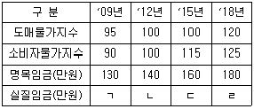
- ㄱ＞ㄷ＞ㄴ＞ㄹ
- ㄱ＞ㄹ＞ㄴ＞ㄷ
- ㄹ＞ㄷ＞ㄱ＞ㄴ
- ㄹ＞ㄴ＞ㄷ＞ㄱ
(정답률: 47%)
74. 노동수요곡선을 이동(shift)시키는 요인이 아닌 것은?
- 임금의 변화
- 생산성의 변화
- 제품 생산 기술의 발전
- 최종상품에 대한 수요의 변화
(정답률: 61%)
75. 다음 중 실망노동력인구(discouraged labor force)는 어디에 해당하는가?
- 취업자
- 실업자
- 경제활동인구
- 비경제활동인구
(정답률: 69%)
76. 직능급 임금체계의 특징에 관한 설명으로 옳은 것은?
- 조직의 안정화에 따른 위계질서 확립이 용이하다.
- 직무에 상응하는 임금을 지급한다.
- 학력과 직종에 관계없이 능력에 따라 임금을 지급한다.
- 무사안일주의 및 적당주의를 초래할 수 있다.
(정답률: 64%)
77. 다음 힉스(Hicks, J.R.)의 교섭모형에 대한 설명으로 틀린 것은?
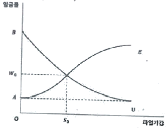
- AE 곡선은 사용자의 양보곡선이다.
- BU 곡선은 노동조합의 저항곡선이다.
- A는 노동조합이 없거나 노동조합이 파업을 하기 이전 사용자들이 지불하려고 하는 임금수준이다.
- 노동조합이 W0보다 더 높은 임금을 요구하면 사용자는 쉽게 수락하겠지만, 그때는 노동조합 내부에서 교섭대표자들과 일반조합원간의 마찰이 불가피하다.
(정답률: 70%)
78. 고전학파의 임금론인 임금생존비설과 마르크스의 노동력재생산비설의 유사점은?
- 노동수요측면의 역할을 중요시한다는 점
- 임금수준은 노동자와 그 가족의 생활필수품의 가치에 의해 결정된다는 점
- 맬더스의 인구법칙에 따른 인구의 증감에 의해 임금이 생존비수준에 수렴한다는 점
- 임금의 상대적 저하경향과 자본에 의한 노동의 착취를 설명하는 점
(정답률: 57%)
79. 육아보조금 지급이 기혼여성들의 노동공급에 미치는 효과로 옳은 것은?(문제 오류로 가답안 발표시 3번으로 발표되었지만 확정답안 발표시 전항 정답처리 되었습니다. 여기서는 3번을 누르면 정답 처리 됩니다.)
- 근로시간 증가와 경제활동참가율 증가
- 근로시간 증가와 경제활동참가율 감소
- 근로시간 감소와 경제활동참가율 증가
- 근로시간 감소와 경제활동참가율 감소
(정답률: 72%)
80. 노동시장에 관한 신고전학파의 주장이 아닌 것은?
- 경쟁적 노동시장
- 노동시장의 분단
- 동일노동 - 동일임금
- 노동의 자유로운 이동
(정답률: 46%)
5과목: 노동관계법규
81. 고용정책 기본법상 다수의 실업자가 발생하거나 발생할 우려가 있는 경우나 실업자의 고용안정이 필요하다고 인정되는 경우 고용노동부장관이 실시할 수 있는 실업대책 사업이 아닌 것은?
- 실업자에 대한 창업점포 구입자금 지원
- 실업자의 취업촉진을 위한 훈련의 실시와 훈련에 대한 지원
- 고용촉진과 관련된 사업을 하는 자에 대한 대부(貸付)
- 실업자에 대한 공공근로사업
(정답률: 59%)
82. 근로기준법상 임산부의 보호에 관한 설명으로 틀린 것은?
- 사용자는 임신 중의 여성에게 출산 전과 출산 후를 통하여 90일(한 번에 둘 이상 자녀를 임신한 경우에는 120일)의 출산전후휴가를 주어야 한다.
- 휴가 기간의 배정은 출산 후에 30일(한 번에 둘 이상 자녀를 임신한 경우에는 45일) 이상이 되어야 한다.
- 사용자는 임신 중의 여성 근로자에게 시간외근로를 하게 하여서는 아니 되며, 그 근로자의 요구가 있는 경우에는 쉬운 종류의 근로로 전환하여야 한다.
- 사업주는 출산전후휴가 종료 후에는 휴가 전과 동일한 업무 또는 동등한 수준의 임금을 지급하는 직무에 복귀시켜야 한다.
(정답률: 61%)
83. 근로자직업능력개발법상 직업능력개발훈련의 기본원칙에 대한 설명으로 틀린 것은?
- 직업능력개발훈련은 근로자 개인의 희망ㆍ적성ㆍ능력에 맞게 실시되어야 한다.
- 직업능력개발훈련은 근로자의 생애에 걸쳐 체계적으로 실시되어야 한다.
- 직업능력개발훈련은 모든 근로자에게 균등한 기회가 보장되도록 하여야 한다.
- 직업능력개발훈련은 학교교육과 관계없이 산업현장과 긴밀하게 연계될 수 있도록 하여야 한다.
(정답률: 64%)
84. 고용보험법상 취업촉진 수당을 지급받을 권리는 몇 년간 행사하지 아니하면 시효로 소멸하는가?
- 1년
- 2년
- 3년
- 5년
(정답률: 69%)
85. 남녀고용평등과 일ㆍ가정 양립 지원에 관한 법률상 고용에 있어서 남녀의 평등한 기회와 대우를 보장하여야 할 사항으로 명시되어 있지 않은 것은?
- 모집과 채용
- 임금
- 근로시간
- 교육ㆍ배치 및 승진
(정답률: 61%)
86. 근로자직업능력 개발법령상 직업능력개발훈련의 구분 및 실시방법에 관한 설명으로 옳은 것은?
- 직업능력개발훈련은 훈련의 목적에 따라 현장훈련과 원격훈련으로 구분한다.
- 양성훈련은 근로자에게 작업에 필요한 기초적 직무수행능력을 습득시키기 위하여 실시하는 직업능력개발훈련이다.
- 혼합훈련은 전직훈련과 향상훈련을 병행하여 직업능력개발훈련을 실시하는 방법이다.
- 집체훈련은 산업체의 생산시설 및 근무 장소에서 직업능력개발훈련을 실시하는 방법이다.
(정답률: 58%)
87. 헌법상 근로에 관한 설명으로 틀린 것은?
- 모든 국민은 근로의 권리를 가진다.
- 모든 국민은 근로의 의무를 진다.
- 연소자의 근로는 특별한 보호를 받는다.
- 근로기회의 제공을 통하여 생활무능력자에 대한 국가적 보호의무를 증가시킨다.
(정답률: 61%)
88. 고용상 연령차별금지 및 고령자고용촉진에 관한 법령상 고령자(ㄱ)와 준고령자(ㄴ)의 기준연령으로 옳은 것은?
- ㄱ: 50세 이상, ㄴ: 45세 이상 50세 미만
- ㄱ: 55세 이상, ㄴ: 50세 이상 55세 미만
- ㄱ: 60세 이상, ㄴ: 55세 이상 60세 미만
- ㄱ: 65세 이상, ㄴ: 60세 이상 65세 미만
(정답률: 71%)
89. 근로기준법령상 근로자의 청구에 따라 사용자가 지급기일 전이라도 이미 제공한 근로자에 대한 임금을 지급하여야 하는 비상(非常)한 경우에 해당하지 않는 것은?
- 근로자가 혼인한 경우
- 근로자가 수입으로 생계를 유지하는 자가 사망한 경우
- 근로자가 그외 수입으로 생계를 유지하는 자가 출산하거나 질병에 걸린 경우
- 근로자나 그의 수입으로 생계를 유지하는 자가 부득이한 사유로 3일 이상 귀향하게 되는 경우
(정답률: 65%)
90. 다음 ( )에 알맞은 것은?(관련 규정 개정전 문제로 여기서는 기존 정답인 2번을 누르면 정답 처리됩니다. 자세한 내용은 해설을 참고하세요.)
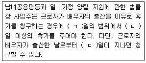
- ㄱ: 5, ㄴ: 3, ㄷ: 15
- ㄱ: 5, ㄴ: 3, ㄷ: 30
- ㄱ: 10, ㄴ: 5, ㄷ: 15
- ㄱ: 10, ㄴ: 5, ㄷ: 30
(정답률: 53%)
91. 고용정책 기본법상 기본원칙으로 틀린 것은?
- 근로의 권리 확보
- 근로자의 직업선택의 자유 존중
- 사업주의 고용관리에 관한 통제
- 구직자(求職者)의 자발적인 취업노력 촉진
(정답률: 69%)
92. 남녀고용평등과 일ㆍ가정 양립 지원에 관한 법령상 직장 내 성희롱의 금지 및 예방에 관한 설명으로 틀린 것은?
- 사업주는 직장 내 성희롱 예방을 위한 교육을 연 1회 이상 하여야 한다.
- 사업주 및 근로자 모두가 여성으로 구성된 사업의 사업주는 직장 내 성희롱 예방 교육을 생략할 수 있다.
- 사업주는 성희롱 예방 교육을 고용노동부장관이 지정하는 기관에 위탁하여 실시할 수 있다.
- 사업주는 근로자가 고객에 의한 성희롱 피해를 주장하는 것을 이유로 해고나 그 밖의 불이익한 조치를 하여서는 아니된다.
(정답률: 75%)
93. 기간제 및 단시간근로자 보호 등에 관한 법률상 기간제 근로자의 차별적 처우의 금지에 관한 설명으로 틀린 것은?
- 사용자는 기간제근로자임을 이유로 당해 사업 또는 사업장에서 동종 또는 유사한 업무에 종사하는 기간의 정함이 없는 근로계약을 체결한 근로자에 비하여 차별적 처우를 하여서는 아니 된다.
- 기간제근로자는 차별적 처우를 받은 경우 차별적 처우가 있는 날부터 6개월 이내에 노동위원회에 시정을 신청할 수 있다.
- 기간제근로자가 노동위원회에 차별시정을 신청할 경우 관련한 분쟁에 있어 입중책임은 사용자가 부담한다.
- 차별적 처우가 인정될 경우 노동위원회는 시정명령을 내릴 수 있다. 이 경우 사용자의 차별적 처우에 명백한 고의가 인정되면 기간제 근로자의 손해액을 기준으로 2배를 넘지 아니하는 범위에서 배상명령을 내릴 수 있다.
(정답률: 46%)
94. 고용보험법상 구직급여의 산정 기초가 되는 임금일액의 산정방법으로 틀린 것은?
- 수급자격의 인정과 관련된 마지막 이직 당시 산정된 평균임금을 기초일액으로 한다.
- 마지막 사업에서 이직 당시 일용근로자였던 자의 경우에는 산정된 금액이 근로기준법에 따른 그 근로자의 통상임금보다 적을 경우에는 그 통상임금액을 기초일액으로 한다.
- 기초일액을 산정하는 것이 곤란한 경우와 보험료를 보험료징수법에 따른 기준보수를 기준으로 낸 경우에는 기준보수를 기초일액으로 한다.
- 산정된 기초일액이 그 수급자격자의 이직전 1일 소정근로시간에 이직일 당시 적용되던 최저임금법에 따른 시간 단위에 해당하는 최저임금액을 곱한 금액보다 낮은 경우에는 최저기초일액을 기초일액으로 한다.
(정답률: 39%)
95. 직업안전법령상 직업정보제공사업자의 준수사항에 해당되지 않는 것은?
- 구인자 업체명(또는 성명)이 표시되어 있지 아니하거나 구인자의 연락처가 사서함 등으로 표시되어 구인자의 신원이 확실하지 아니한 구인광고를 게재하지 아니할 것
- 직업정보제공매체의 구인ㆍ구직광고에는 구인ㆍ구직자 및 직업정보제공사업자의 주소 또는 전화번호를 기재할 것
- 직업정보제공사업의 광고문에“(무료)취업상담”, “취업추천”, “취업지원” 등의 표현을 사용하지 아니할 것
- 구직자의 이력서 발송을 대행하거나 구직자에게 취업추천서를 발부하지 아니할 것
(정답률: 67%)
96. 직업안정법상 직업소개사업을 겸업할 수 있는 자는?
- 「공중위생관리법」에 따른 이용업 사업을 경영하는 자
- 「결혼중개업의 관리에 관한 법률」에 따른 결혼중개업 사업을 경영하는 자
- 「식품위생법 시행령」에 따른 단란주점영업 사업을 경영하는 자
- 「식품위생법 시행령」에 따른 유흥주점영업 사업을 경영하는 자
(정답률: 66%)
97. 노동기본권에 관하여 헌법에 명시된 내용으로 틀린 것은?
- 공무원인 근로자는 법률이 정하는 자에 한하여 단결권ㆍ단체교섭권 및 단체행동권을 가진다.
- 근로자는 근로조건의 향상을 위하여 자주적인 단결권ㆍ단체교섭권 및 단체행동권을 가진다.
- 공익사업에 종사하는 근로자의 단체행동권은 법률이 정하는 바에 의하여 이를 제한하거나 인정하지 아니할 수 있다.
- 법률이 정하는 중 방위산업에 종사하는 근로자의 단체행동권은 법률이 정하는 바에 의하여 이를 제한하거나 인정하지 아니할 수 있다.
(정답률: 49%)
98. 근로자퇴직급여 보장법상 개인형퇴직연금제도를 설정할 수 있는 사람을 모두 고른 것은?
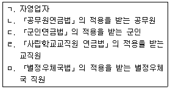
- ㄱ
- ㄱ, ㅁ
- ㄴ, ㄷ, ㄹ
- ㄱ, ㄴ, ㄷ, ㄹ, ㅁ
(정답률: 58%)
99. 근로자직업능력 개발법상 재해위로금에 관한 설명으로 틀린 것은?
- 직업능력개발훈련을 받는 근로자가 직업능력개발훈련 중에 그 직업능력개발훈련으로 인하여 재해를 입은 경우에는 재해 위로금을 지급하여야 한다.
- 위탁에 의한 직업능력개발훈련을 받는 근로자에 대하여는 그 위탁자가 재해 위로금을 부담한다.
- 위탁받은 자의 훈련시설의 결함이나 그 밖에 위탁받은 자에게 책임이 있는 사유로 인하여 재해가 발생한 경우에는 위탁받은 자가 재해 위로금을 지급하여야 한다.
- 재해위로금의 산정기준이 되는 평균임금을 산업재해보상보험법에 따라 고용노동부장관이 매년 정하여 고시하는 최고보상기준금액을 상한으로 하고 최저 보상기준 금액은 적용하지 아니한다.
(정답률: 62%)
100. 근로기준법상 경영상 이유에 의한 해고에 관한 설명으로 틀린 것은?
- 경영 악화를 방지하기 위한 사업의 양도ㆍ인수ㆍ합병은 긴박한 경영상의 필요가 있는 것으로 본다.
- 사용자는 해고를 피하기 위한 노력을 다하여야 한다.
- 사용자는 합리적이고 공정한 해고의 기준을 정하고 이에 따라 그 대상자를 선정하여야 한다.
- 사용자는 해고를 피하기 위한 방법과 해고의 기준 등에 관하여 해고를 하려는 날의 60일 전까지 고용노동부장관의 승인을 받아야 한다.
(정답률: 72%)